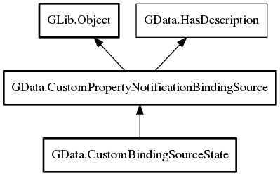

CustomBindingSourceState
Object Hierarchy:

Description:
public class CustomBindingSourceState :
CustomPropertyNotificationBindingSource
CustomBindingSourceState is state object implementation. Unlike value objects that are stored as CustomPropertyNotificationBindingSource
in order to create flexible implementations state objects can only be stored as CustomBindingSourceState or its subclass. If there is a
need for different state object, then classifying it as bool value object might be better
Being derived from CustomPropertyNotificationBindingSource it also inherits all of its connection and awareness and adds only access to
custom data and automates its recalculation
Since:
0.1
Content:
Properties:
Creation methods:
Inherited Members:
All known members inherited from class
GData.CustomPropertyNotificationBindingSource
All known members inherited from class GLib.Object
- @new
- new_valist
- newv
- add_toggle_ref
- add_weak_pointer
- bind_property
- connect
- constructed
- disconnect
- dispose
- dup_data
- dup_qdata
- freeze_notify
- @get
- get_class
- get_data
- get_property
- get_qdata
- get_type
- notify_property
- @ref
- ref_sink
- replace_data
- replace_qdata
- remove_toggle_ref
- remove_weak_pointer
- @set
- set_data
- set_data_full
- set_property
- set_qdata
- set_qdata_full
- steal_data
- steal_qdata
- thaw_notify
- unref
- weak_ref
- weak_unref
- notify
- ref_count
All known members inherited from interface GData.HasDescription